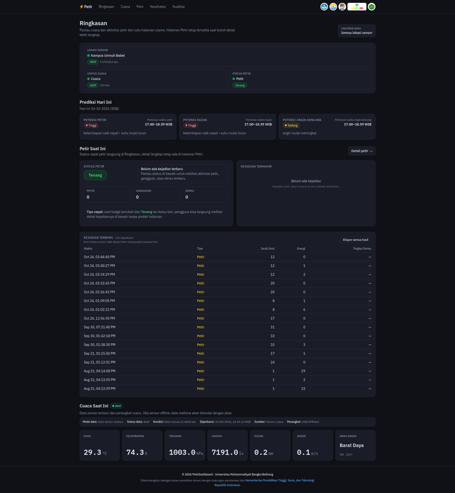
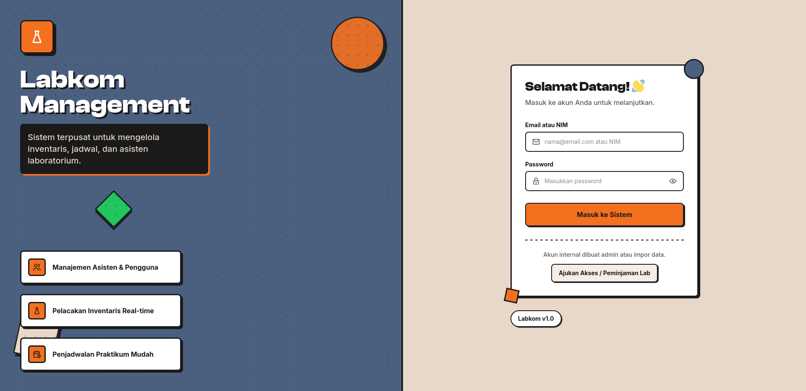
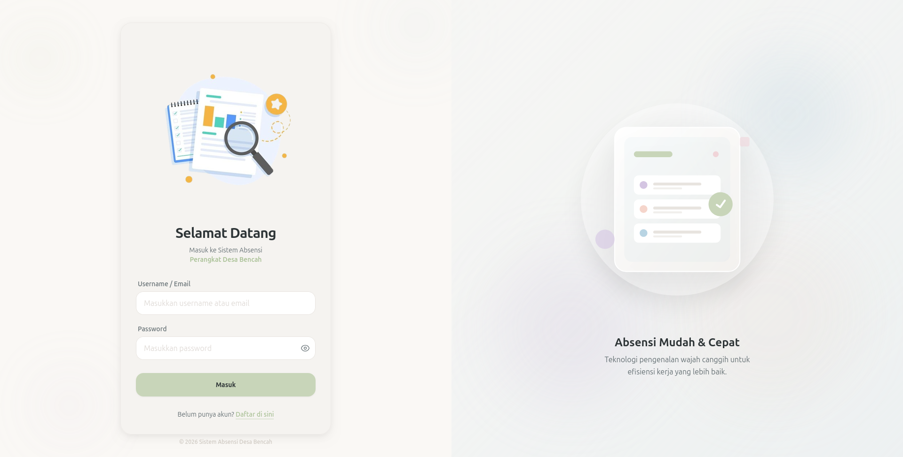
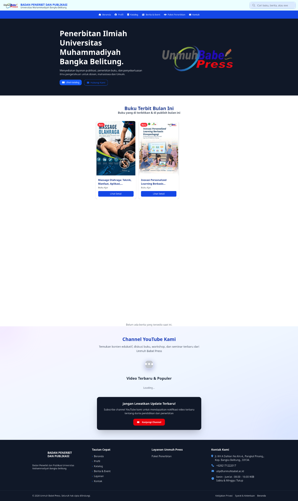
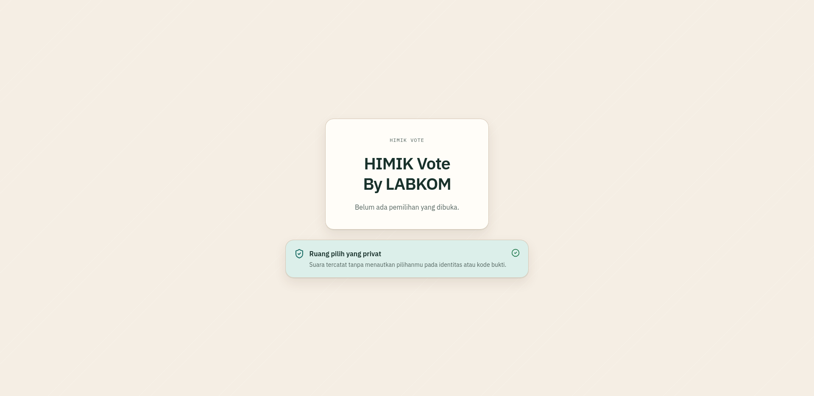
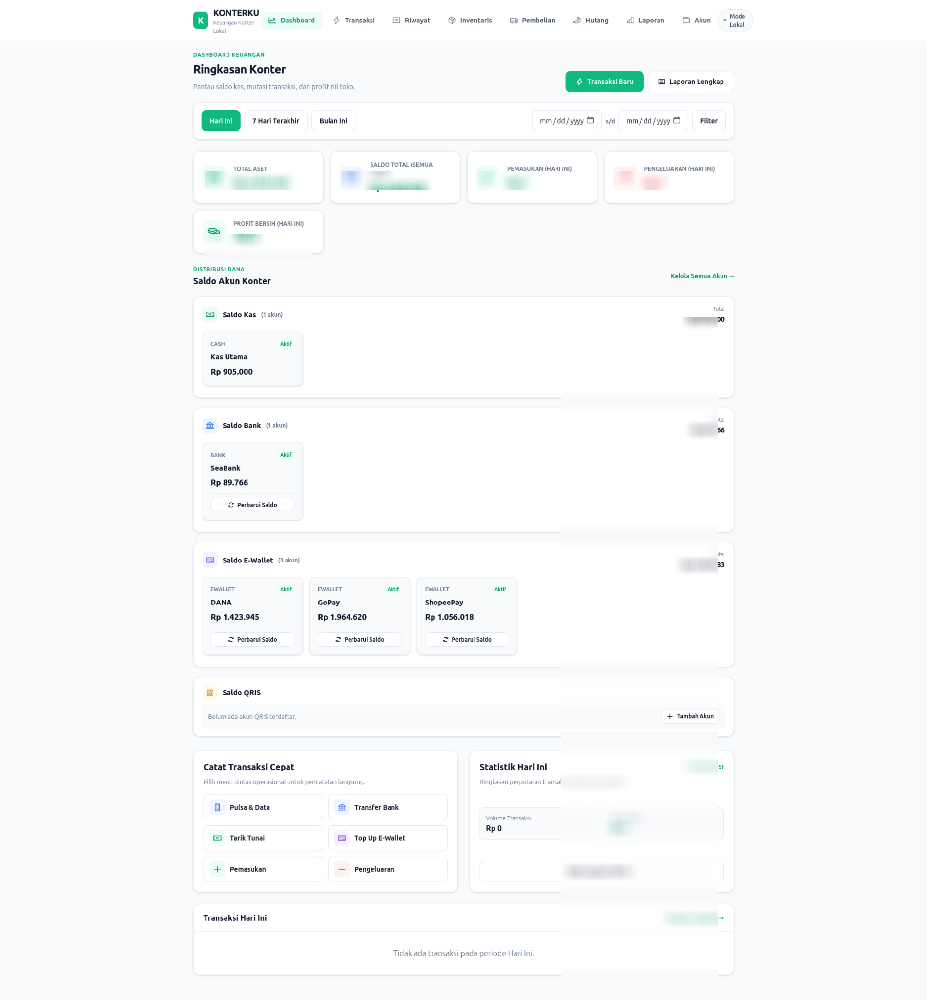

Frontend Development
Membangun antarmuka web responsif, aksesibel, dan cepat dengan struktur semantik dan styling efisien.
Membangun jembatan antara teknologi & budaya lokal
Saya membangun pengalaman web yang bersih, responsif, dan mudah digunakan. Berfokus pada frontend modern, estetika antarmuka, serta eksplorasi teknologi dan nilai budaya lokal melalui karya digital.
Fokus keahlian: Frontend Web Development · UI/UX Design · Creative Digital Projects
Skills & Tools
Kombinasi pengembangan web modern, perancangan antarmuka visual, dan fondasi arsitektur perangkat. Saya terus memperbarui kapabilitas melalui implementasi proyek nyata.
Membangun antarmuka web responsif, aksesibel, dan cepat dengan struktur semantik dan styling efisien.
Mengeksplorasi ekosistem JavaScript modern, integrasi database, manajemen data, dan arsitektur RESTful API.
Merancang tata letak antarmuka yang intuitif, menyusun prototipe, dan mengolah aset grafis secara presisi.
Pemahaman dasar konfigurasi perangkat jaringan, version control sistematis, dan alur kerja pengembang.
 Creative thinking. Practical solutions.
Creative thinking. Practical solutions.
About Me
Saya Arjuna, pengembang web asal Bangka Belitung dengan ketertarikan mendalam pada frontend engineering dan user experience. Saya memandang coding sebagai media ekspresi untuk menyederhanakan interaksi manusia dengan teknologi.
Salah satu panggilan kreatif saya adalah menghubungkan teknologi digital dengan kekayaan budaya lokal — salah satunya lewat inisiatif dokumentasi musik tradisional Dambus Bangka agar tetap lestari dan mudah diakses generasi penerus.
Featured Work
Koleksi aplikasi web, dashboard pemantauan, dan platform digital yang saya kembangkan dengan fokus pada fungsionalitas riil, kemudahan penggunaan, dan arsitektur yang andal.

Dashboard terintegrasi untuk pemantauan cuaca dan aktivitas petir pada kegiatan riset Universitas Muhammadiyah Bangka Belitung. Menyajikan visualisasi data sensor, kondisi lingkungan riil, prediksi, dan riwayat kejadian petir.

Sistem manajemen laboratorium komputer terpusat untuk memfasilitasi pendataan inventaris perangkat keras, asisten lab, penjadwalan sesi praktikum, serta pencatatan izin akses dan peminjaman fasilitas laboratorium.

Aplikasi web presensi perangkat desa dengan antarmuka yang sederhana dan mudah digunakan. Mengusung konsep absensi berbasis pengenalan wajah untuk mendukung efisiensi proses pencatatan dan rekapitulasi kehadiran.

Website resmi badan penerbit dan publikasi Universitas Muhammadiyah Bangka Belitung. Menyediakan katalog buku akademik, informasi penerbitan ilmiah, berita kegiatan, serta layanan publikasi karya kampus.

Platform pemilihan berbasis web untuk mendukung digitalisasi proses pemungutan suara organisasi mahasiswa HIMIK. Menghadirkan alur pemilihan yang jelas, mudah diakses, dengan antarmuka yang mengutamakan privasi pemilih.

Aplikasi pengelolaan keuangan operasional konter dan ritel. Menyediakan dashboard ringkasan saldo akun kas dan e-wallet, pencatatan transaksi masuk-keluar, manajemen stok barang, serta laporan keuangan terstruktur.
Get In Touch
Terbuka untuk kesempatan kerja, proyek lepas, konsultasi antarmuka web, atau diskusi seputar pelestarian budaya lewat teknologi digital. Hubungi saya langsung melalui saluran berikut: